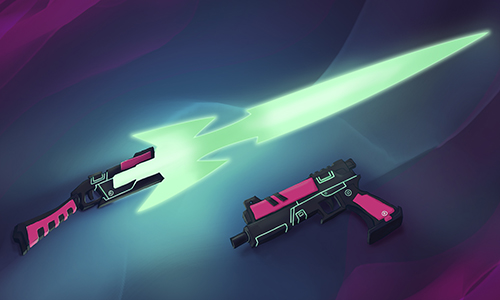
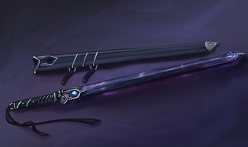
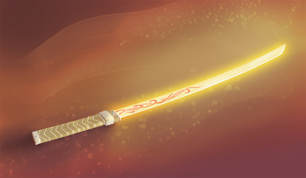
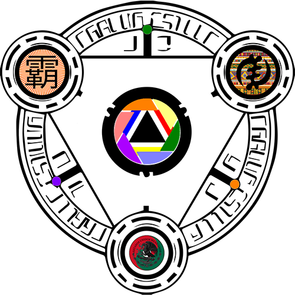
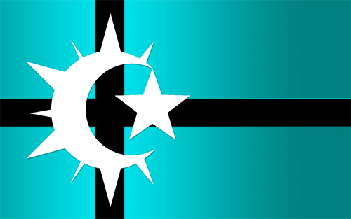
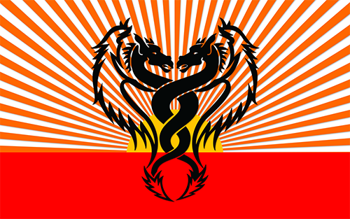
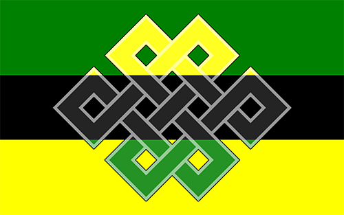
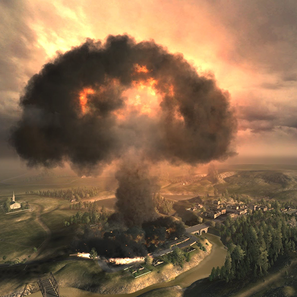
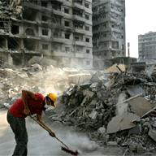
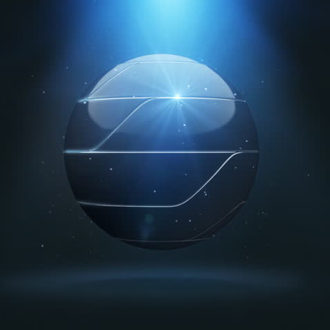

Glossary
-

Tiala Hartlight
Main character. Uses the malica magical girl Alulu Dike. The leader. For more info, visit the characters page.
-

Jí Lián Xía
Main character. Uses the malica magical girl Kesshō Yíng. The smart one. For more info, visit the characters page.
-

Claris Quies
Main character. Uses the malica magical girl Tessera Vis. The unpredictable one. For more info, visit the characters page.
-
Magic
Also known as manifest will. Humanity has a natural ability to impose their will on the world and if their mental energy is up to it, occasionally bend the laws of nature. With the nootropics found in Africa, humanity has advanced past bending the laws and into outright breaking them. In essence, whatever one wants to happen happens provided they have the mental energy and concentration to accomplish it. To prevent abuse, Magic is regulated by the GCSC via Dreamdrops.
-
The Dreamscape
After the Final War and the influx of Magic into the world, the GCSC stabilized society by creating a set of totems know as Dreamdrops to help mitigate the use of will and prevent anyone from intentionally or accidentally destroy the world. The Dreamdrops were placed in the imaginary realm known as The Dreamscape.
-
Dreamdrops
Totems designed by the GCSC that emit an influence that discourages people from doing drastic and dangerous things with their Magic. In order to best protect the Dreamdrops, they were placed in the Dreamscape.
-
Malica
One of the most difficult forms of Magic to utilize, a Malica is the partial or total transformation of your appearance. The effect is such that bigger things such as height and mass as well as smaller subtleties like eye colors and even the manner of walking will be altered. This is one of the most difficult magics to invoke, requiring an extreme amount concentration and focus. As a quirk of its use, Malica tends to highlight and exaggerate an aspect of the user's personality.
-
Weapons
As part of the Accord of the Truine, all weapons are now ethereal and only provide the illusion of harm, causing no lasting harm. Defensive groups such as the Starlit 7th and the Lovely Hearts can activate a secondary form that causes actual harm, typically switching the color from azure to crimson.
- 
Light Blade Revolver
The weapon of Alulu. The Light Blade Revolver is a transformative weapon, capable of assuming the form of dual handguns, a scythe, a sword, a chain whip, and a sniper rifle.
- 
Tenebris Operiet
The weapon of Kesshō. Tenebris Operiet is actually two weapons, the black diamond blade Tenebris and the sheath Operiet. Kesshō can wield them as dual blades, the sheath having a magic monofiliment cutting edge as sharp as the sword. The color of the crystal on Tenebris indicates the form.
- 
Fallire Fanale
The weapon of Tessera. Fallire Fanale is actually made of light condensed and coalesced into a physical form and held together by magic. Unlike most weapons, Fallire Fanale has no ethereal form; the only non combative use for it is to increase its brightness and blind foes.
- 
Triune
The new government structure set up by the Hero of Force. Under it, each territory sends a representative to what was formerly known as Monaco, where they work out trade agreements, international policies and the like. As crime has drop precipitously after the Final War and the world economy is mostly stable, these are almost ceremonial positions. The three triune are The Tribal Kingdom of Vagor, the Tŏngī Kōtei-fū empire, and the republic of Sege Amant. The HoF also set up the Accord of the Triune, but none save those who serve in Monaco know what is written therein.
- 
The Tribal Kingdom of Vagor
Made of the former American continents, The Tribal Kingdom of Vagor is a socialist monarchy. The Queen wields power absolute and rules by birth, but institutes a socialist society of sharing and sharing alike. The people of TKV tend to not stay in a single town for an extended time, instead moving to locations through the triune. TKV produces most of the world's food.
- 
Tŏngī Kōtei-fū
Made of mostly the former Asian continent, Tongyei Kouteifuu is a traditionalist empire and the leading producers of technology in the world. Unlike the other two triune, there is a rigid social hierarchy in place, though people can rise and fall from their positions.
- 
Sege Amant
Made of the former African and European continents, Sege Amant is ruled democratically by a council of elders. There are thirteen council members; twelve overseeing the subterritories the triune is divided into and one to sit in the triune council. Elections are held every three years with six of the twelve elders up for reelection, making the minimum term limit six years. The triune position is decided among the elders' council annually, but no one elder can sit the postion for more than three years. Sege Amant is the entertainment hub of the world.
-
Sapes
More of a concept than anything else, Sapes is the name given to the ruined country of Australia. Rumors persist that there is something or someone living there still despite photographic and video evidence to the contrary.
-
Starlit 7th
A team of transforming heroes that protect the world from invisible threats. They fight in imaginary space wich typically doesn't effect real space. Magic is manifested as external armor. For more info, visit the factions page.
-

Heart Melody: Lovely Hearts
A team of magical girl that protect the world from extradimensional incursions. They fight in real space and thus try to direct fights to unpopulated areas. Magic is manifested as ESP and is internal. For more info, visit the factions page.
-
Imaginary Space
Imaginary space exists right beside real space but does not typically interact with it. Outside of the notable danger of the Dreamdrops being destroyed, if imaginary space were to be collapsed entirely, it is theorized that reality would either fold in on itself or violently expand outward. Either would herald the end of existence.
- 
The Final War
The last worldwide conflict before the era of peace. Ended by the Hero of Force. For further information, visit the lore page.
-
Hero of Force
The hero ended the Final War. They later set up much of the world's new government and infrastructure before disappearing without a trace. For further information, visit the lore page.
- 
Post War Changes
Immediately after the Final War, people used Magic to run rampant and any and everything imaginable were made manifest. The GCSC came online shortly after the conclusion of the war and was able to mitigate or revert much of the damage wrought, but some things such as vampires and superheroes became permanent parts of society.
- 
Global Collective SubConscious
The GCSC is a worldwide interconnected network of information linked via telepathy. An extension of the study looking into the subconscious telepathy lying dormant in all of humanity, the GCSC has displaced all of forms of information dispersal. Because it has interconnected the whole of humanity, the GCSC has been able to help place people into fields of study and work where they are most capable of excellence. The GCSC also bypasses language barriers by live translating languages for all parties involved. While connecting is optional, very few opt out.